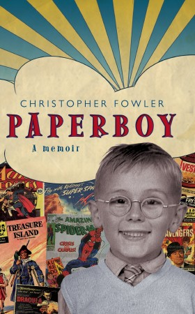

After many hours of discussion and lively debate (and not a tantrum in sight) the judges have managed to whittle down the five shortlisted books for ‘The Green Carnation Prize 2010’ and have come up with their winner…
Paperboy by Christopher Fowler
‘Superman, Dracula, The Avengers, Treasure Island…when you’re ten years old, you can fall in love with any story so long as it’s a good one. But what if you’re growing up in a house without books?

Caught between an ever-sensible but exhausted mother and a DIY-obsessed father fighting his own demons, Christopher takes refuge in words. His parents try to understand their son’s peculiar obsessions, but fast lose patience with him – and each other. The war of nerves escalates to include every member of the Fowler family, and something has to give, but does it mean that a boy must always give up his dreams for the tough lessons of real life? Beautifully written, this rich and astute evocation of a time and a place recalls a childhood at once eccentric and endearingly ordinary.’
The judges Paul Magrs, Nick Campbell, Lesley Cookman, Katy Manning and Simon Savidge have had a tough time: they thought any of the five books could have won, so it was no easy mission. Simon Savidge who will be taking over as Chair in 2011 said “it was such a difficult decision, each book had its own strengths. ‘God Says No for putting you into the mind set of someone I never thought I could understand and enraging you and making you laugh out loud, London Triptych for its characters (one of which might just be my favourite character of the year) and historical feel over the generations, Children of the Sun for being an importantly disturbing and shocking tale and Man’s World for its humour, emotion and more.’
Yet in the end they were all agreed that Paperboy, which is a memoir with a delightful fictional feel in parts as he writes in the voices of those he remembers. Paul Magrs Chair of the judges for 2010 said ‘Paperboy is about the forming of a gay sensibility – but more than that, it’s about the growth of a reader and a wonderfully generous and inventive writer. It’s a great wodge of social history – of back-to-back houses, plasticine models and exercise books, and how Lois Lane’s adventures were always more interesting than Superman’s. It’s modest, funny and brilliant.’